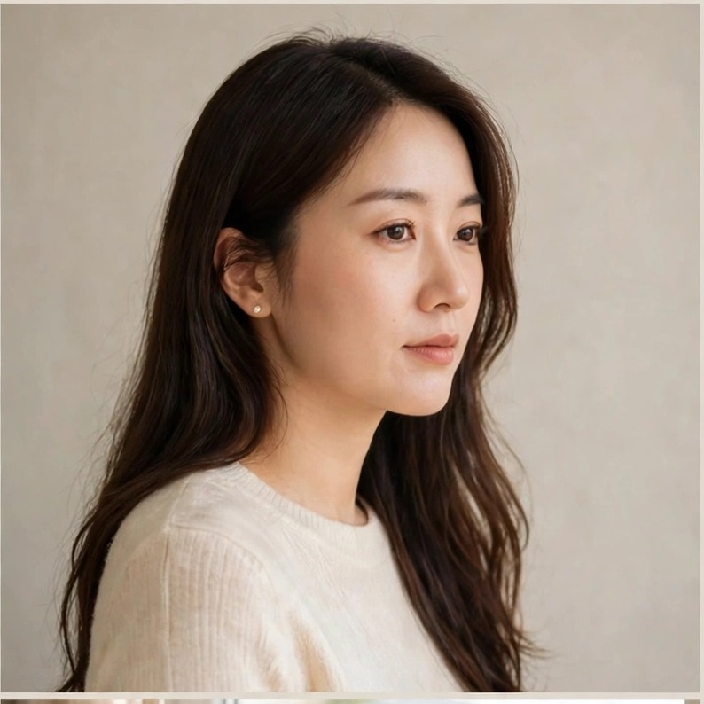
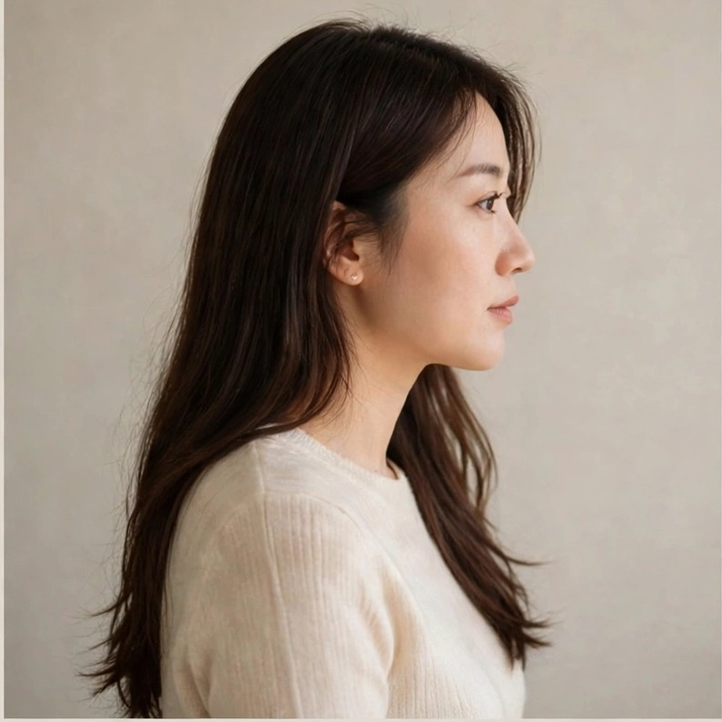

米曦 Mi Xi 演唱 🎶
《换我们为妳点灯》 米曦 Mi Xi 演唱 · 系列第 3 首
一首唱给长辈的感恩与祝福之歌 · 灯的故事

关于这首歌
有些爱，是在我们还小的时候，悄悄为我们点起的一盏灯。
《换我们为妳点灯》是一首关于感恩与祝福的歌。它唱给每一位曾在平凡日子里默默守护我们、陪我们走过寒冬的长辈——那些温暖当时不觉得特别，多年以后回头望，才发现那盏灯一直亮在心底。
如今我们长大了。这首歌想说的是：往后的日子，换我们把灯点起来——愿平安随着他们，愿喜乐住在心中，愿他们值得的幸福，一样都不少。
愿这首歌，也陪你想起自己生命里的那盏灯。
本歌曲由米老爸团队原创策划与撰词，音乐及演唱使用 AI 辅助生成。
歌曲背后的故事
这首歌，开始于一个画面：一扇窗、一盏灯，和一位在灯下守着岁月的人。
有些长辈的爱，从不大声：藏在一顿热饭里、一句叮咛里，和一段陪着走完的路上。年轻的时候只当是日常，走远了、回头望，才发现那盏灯从来没有熄过。
米曦把这首歌唱得很轻、很稳——像把一盏灯，轻轻送回那扇窗前。歌里想说的话很简单：谢谢妳当年的光；从今往后，换我们为妳点灯。
音乐录影 MTV
▶ 在本页观看（无需 YouTube）
▶ 在 YouTube 观看
聆听 · 完整歌词
米曦 Mi Xi 演唱 🎶 ／ AI 虚拟歌手 · 音乐及演唱由 AI 辅助生成
完整歌词（原文）· 播放时可对照聆听。
小时候的路，有妳牵着走
春风吹过门前，岁月慢慢流
妳把温暖藏在平凡的日子里
让我们带着爱，勇敢往前走
一年又一年，我们各自远行
走过多少城市，看过多少风景
回头望那盏灯，依然亮在心底
才懂妳给的爱，是一生的光明
· 副歌 ·
亲爱的姑姑，换我们为妳点灯
从今往后的路，让我们陪妳走
妳曾为我们遮风，陪我们走过寒冬
如今换我们守候，愿妳笑容依旧
亲爱的姑姑，愿妳的心自由
无论岁月如何，妳的光依然温柔
愿平安随着妳，愿喜乐住在心中
妳值得世间美好，值得幸福长久
· 桥段 ·
温哥华的雨，蒙特娄的雪
隔着千山万水，亲情从未走远
妳看，春天又来了，花正开在窗前
我们都在这里，爱妳直到永远
· 尾声 ·
亲爱的姑姑，换我们为妳点灯
愿妳往后的每一天，都有幸福相逢
附注：米曦为虚拟演唱角色，歌声由 AI 生成，并非真人录音。
认识米曦 · Mi Xi
米曦（Mi Xi）是米老爸 Daddy Mi 旗下的 AI 虚拟女歌手，也是 Gospel Wisdom 音乐系列的歌声形象。
她的名字取自清晨的第一道阳光。她的音乐温柔、安静，陪伴人们在忙碌的生活中停下脚步，重新打开经文，思想神的话语，并以信心、仁爱和行动迎接新的一天。
她演唱中文主题歌《在你话语里，天亮了》，以及独立创作的英文主题歌 A Little More Like Light；也演唱这首感恩单曲《换我们为妳点灯》，以及一首生日祝福歌《愿你心里有光》。
米曦是由 Daddy Mi 创作团队建立的虚拟音乐角色，并非真人歌手。音乐与演唱使用 AI 技术辅助生成，由团队负责创作方向、内容审定及制作管理。
愿每一首歌，都成为安静走近神话语的邀请。



专辑之旅 · 进行中
米曦的歌曲系列正在连载：每一首歌是故事的一章。集满 12 首，将收成一张完整专辑。
目前进度：第 1–4 首 ／ 共 12 首
- 第 1 首 · 《在你话语里，天亮了》中文主题歌 · 晨光窗边
- 第 2 首 · A Little More Like Light英文主题歌 · 海边
- 第 3 首 · 《换我们为妳点灯》（本页）感恩单曲 · 灯
- 第 4 首 · 《愿你心里有光》生日祝福歌
继续探索
《換我們為妳點燈》 米曦 Mi Xi 演唱 · 系列第 3 首
一首唱給長輩的感恩與祝福之歌 · 燈的故事
關於這首歌
有些愛，是在我們還小的時候，悄悄為我們點起的一盞燈。
《換我們為妳點燈》是一首關於感恩與祝福的歌。它唱給每一位曾在平凡日子裡默默守護我們、陪我們走過寒冬的長輩——那些溫暖當時不覺得特別，多年以後回頭望，才發現那盞燈一直亮在心底。
如今我們長大了。這首歌想說的是：往後的日子，換我們把燈點起來——願平安隨著他們，願喜樂住在心中，願他們值得的幸福，一樣都不少。
願這首歌，也陪你想起自己生命裡的那盞燈。
本歌曲由米老爸團隊原創策劃與撰詞，音樂及演唱使用 AI 輔助生成。
歌曲背後的故事
這首歌，開始於一個畫面：一扇窗、一盞燈，和一位在燈下守著歲月的人。
有些長輩的愛，從不大聲：藏在一頓熱飯裡、一句叮嚀裡，和一段陪著走完的路上。年輕的時候只當是日常，走遠了、回頭望，才發現那盞燈從來沒有熄過。
米曦把這首歌唱得很輕、很穩——像把一盞燈，輕輕送回那扇窗前。歌裡想說的話很簡單：謝謝妳當年的光；從今往後，換我們為妳點燈。
音樂錄影 MTV
▶ 在本頁觀看（無需 YouTube）
▶ 在 YouTube 觀看
聆聽 · 完整歌詞
米曦 Mi Xi 演唱 🎶 ／ AI 虛擬歌手 · 音樂及演唱由 AI 輔助生成
完整歌詞（原文）· 播放時可對照聆聽。
小時候的路，有妳牽著走
春風吹過門前，歲月慢慢流
妳把溫暖藏在平凡的日子裡
讓我們帶著愛，勇敢往前走
一年又一年，我們各自遠行
走過多少城市，看過多少風景
回頭望那盞燈，依然亮在心底
才懂妳給的愛，是一生的光明
· 副歌 ·
親愛的姑姑，換我們為妳點燈
從今往後的路，讓我們陪妳走
妳曾為我們遮風，陪我們走過寒冬
如今換我們守候，願妳笑容依舊
親愛的姑姑，願妳的心自由
無論歲月如何，妳的光依然溫柔
願平安隨著妳，願喜樂住在心中
妳值得世間美好，值得幸福長久
· 橋段 ·
溫哥華的雨，蒙特婁的雪
隔著千山萬水，親情從未走遠
妳看，春天又來了，花正開在窗前
我們都在這裡，愛妳直到永遠
· 尾聲 ·
親愛的姑姑，換我們為妳點燈
願妳往後的每一天，都有幸福相逢
附註：米曦為虛擬演唱角色，歌聲由 AI 生成，並非真人錄音。
認識米曦 · Mi Xi
米曦（Mi Xi）是米老爸 Daddy Mi 旗下的 AI 虛擬女歌手，也是 Gospel Wisdom 音樂系列的歌聲形象。
她的名字取自清晨的第一道陽光。她的音樂溫柔、安靜，陪伴人們在忙碌的生活中停下腳步，重新開啟經文，思想神的話語，並以信心、仁愛和行動迎接新的一天。
她演唱中文主題歌《在你話語裡，天亮了》，以及獨立創作的英文主題歌 A Little More Like Light；也演唱這首感恩單曲《換我們為妳點燈》，以及一首生日祝福歌《願你心裡有光》。
米曦是由 Daddy Mi 創作團隊建立的虛擬音樂角色，並非真人歌手。音樂與演唱使用 AI 技術輔助生成，由團隊負責創作方向、內容審定及製作管理。
願每一首歌，都成為安靜走近神話語的邀請。
專輯之旅 · 進行中
米曦的歌曲系列正在連載：每一首歌是故事的一章。集滿 12 首，將收成一張完整專輯。
目前進度：第 1–4 首 ／ 共 12 首
- 第 1 首 · 《在你話語裡，天亮了》中文主題歌 · 晨光窗邊
- 第 2 首 · A Little More Like Light英文主題歌 · 海邊
- 第 3 首 · 《換我們為妳點燈》（本頁）感恩單曲 · 燈
- 第 4 首 · 《願你心裡有光》生日祝福歌
繼續探索
《換我們為妳點燈》 “Our Turn to Light a Lamp for You” · Mi Xi · Song 3 of the Series
A song of gratitude and blessing for the elders who lit our way · a story of a lamp
About This Song
Some love is a lamp lit quietly for us when we were still small.
《換我們為妳點燈》 — “Our Turn to Light a Lamp for You” — is a song of gratitude and blessing. It is sung for every elder whose quiet care guarded our childhood and walked with us through cold winters: a warmth we hardly noticed then, until years later we looked back and found the lamp still shining in the heart.
Now we are grown. This song says: from here on, let us be the ones who keep the lamp lit — may peace go with them, may joy live in their hearts, and may every happiness they deserve find its way to them.
May this song also remind you of the lamp in your own life.
Original concept and lyrics by the Daddy Mi team. Music and vocals generated with AI assistance.
The Story Behind the Song
This song begins with a picture: a window, a lamp, and someone keeping watch over the years beneath its light.
Some elders love quietly. Their love hides in a hot meal, in a word of reminding, in a stretch of road they walked beside us. When we were young, we took it as ordinary days; only after going far away and looking back do we see that the lamp never went out.
Mi Xi sings this song softly and steadily — like carrying a lamp gently back to that window. What it wants to say is simple: thank you for your light, all those years. From now on, it is our turn to light a lamp for you.
Music Video
▶ Watch on this page (no YouTube needed)
▶ Watch on YouTube
Listen · Full Lyrics
Performed by Mi Xi 🎶 / Virtual AI vocalist · AI-generated music and vocals
The full original Mandarin lyrics — follow along as you listen.
小時候的路，有妳牽著走
春風吹過門前，歲月慢慢流
妳把溫暖藏在平凡的日子裡
讓我們帶著愛，勇敢往前走
一年又一年，我們各自遠行
走過多少城市，看過多少風景
回頭望那盞燈，依然亮在心底
才懂妳給的愛，是一生的光明
· CHORUS ·
親愛的姑姑，換我們為妳點燈
從今往後的路，讓我們陪妳走
妳曾為我們遮風，陪我們走過寒冬
如今換我們守候，願妳笑容依舊
親愛的姑姑，願妳的心自由
無論歲月如何，妳的光依然溫柔
願平安隨著妳，願喜樂住在心中
妳值得世間美好，值得幸福長久
· BRIDGE ·
溫哥華的雨，蒙特婁的雪
隔著千山萬水，親情從未走遠
妳看，春天又來了，花正開在窗前
我們都在這裡，愛妳直到永遠
· OUTRO ·
親愛的姑姑，換我們為妳點燈
願妳往後的每一天，都有幸福相逢
Note: Mi Xi is a fictional AI vocalist. The vocal performance is AI-generated, not a human recording.
Meet Mi Xi
Mi Xi is a virtual AI vocalist created by Daddy Mi and the musical voice of Gospel Wisdom.
Her name evokes the first gentle light of morning. Through intimate acoustic songs, her music invites listeners to slow down, open Scripture, and carry its message into everyday life with faith, kindness, and hope.
Her featured songs include the original Mandarin theme 在你话语里，天亮了 and the independently conceived English theme A Little More Like Light — and also this gratitude single, 《換我們為妳點燈》, and a birthday blessing song, 《愿你心里有光》 (“May There Be Light in Your Heart”).
Mi Xi is a fictional musical persona, not a human recording artist. Her music and vocals are created with AI assistance under the creative direction and editorial oversight of the Daddy Mi team.
Her purpose is simple: to make room for quiet reflection, heartfelt prayer, and a renewed willingness to live what we believe.
The Album Journey · In Progress
Mi Xi's song series is unfolding chapter by chapter. At 12 songs, the series will be collected into a complete album.
Progress: Songs 1–4 of 12
- Song 1 · 《在你话语里，天亮了》Mandarin Theme · Morning Window
- Song 2 · A Little More Like LightEnglish Theme · By the Sea
- Song 3 · 《換我們為妳點燈》 (this page)A Song of Gratitude · Lamplight
- Song 4 · 《愿你心里有光》A Birthday Blessing